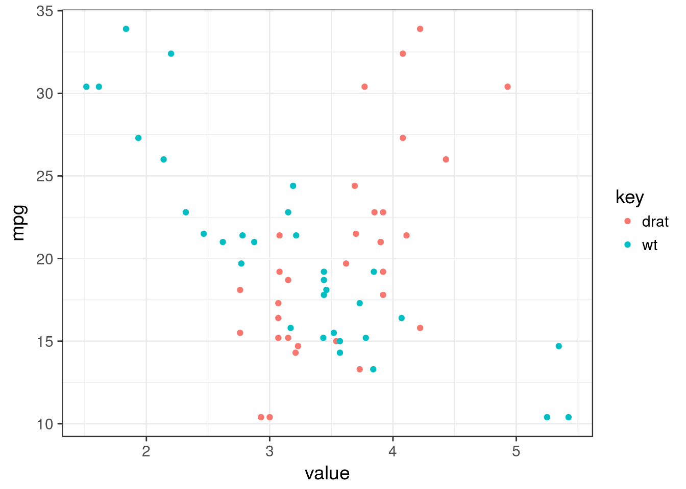

Install tutorial
Install R

R is available for free for Windows, GNU/Linux and MacOS.
As for now, the latest version is 3.4.0.
One common complain about R is the frequency of updates. This is true, but can be sorted out with a good package manager. Of note, major updates (3.4.0, late April 2017) are the only one forcing you to re-install extra-packages and are released on a yearly basis.
Windows
Visit the download page and choose the corresponding installer for your platform.
Mind that you will need Rtools to compile and install some packages.
To circumvent the lack of a package manager in Windows, it is possible to install the R library installr. This package provides the updateR() function which takes care of updating your R installation and migrates your installed libraries whenever a major R update is released. Recently, a package has been released which can also help you in this task .
MacOS
You can either browse to the download page or better use the Homebrew package manager.
Robert Rudis wrote a nice blog post about a 100% homebrew r install.
Once homebrew is installed, you can easily install/uninstall many programs with their dependencies and utilities. This implies to use the terminal. If you’re not comfortable with the use of the terminal, ask me! It is worth it. To install R using brew write in the following:
brew install rUpdates for all your software can be easily performed and will be automatically handled by the following line:
brew update; brew upgradeGNU/Linux
Any Linux distributions is bundled with a great package manager such as dpkg or rpm. Visit the appropriate webpage for your distribution here.
After you get the correct entry in your package manager, it should quite easy
sudo apt-get install r-base r-base-devInstall Rstudio

Rstudio is an Integrated Development Editor, it wraps and interfaces R but, R needs to be installed first. The free-version contains everything you need.
Visit the download page and choose the corresponding installer for your platform. As for now, the latest version is 1.0.136.
See the blog entry about this major release.
Of note, this version 1 comes with new features, such as notebooks and inline results to get chunks and executation one after the other.
Open rstudio
They are 4 main panels in rstudio, but as the top-left is for scripting and by default missing, the layout should looks like
install R packages from the Comprensive R Archive Network (CRAN)
On the bottom-right panel, 5 tabs are present:
- Files
- Plots
- Packages
- Help
- Viewer
Click on the Packages tab (1.) and select the select the Install button (2.). Type tidyverse, devtools in (3.)

It takes some time, usually 10 seconds up to 5 minutes for a single package depending on its size and compilation stage.
The packages can also be installed in the console (i.e. the bottom-left panel). The snapshot below shows you how to install devtools using the console:

Of note, devtools is handy when you want to install a development version, for example if a bug was fixed but the package not yet submitted to CRAN.
devtools::install_github("hadley/dplyr")A note about package updates
The complaint of very frequent updates might be legitimate as it could be cumbersome to maintain R up-to-date when you have many packages. Actually, it is as easy as:
update.packages()But, you should rather use the green Update button next to the Install (located in the Packages tab). The advantage is that you can check which package you would like to update and look at the actual changes by clicking on the NEWS link.
install bioconductor packages
The bioconductor resource will be detailed later, but to save time, copy / paste the following code into the console to install the useful packages:
source("https://bioconductor.org/biocLite.R")
# to install the version 3.4 of the bioconductor installer.
biocLite(c("limma", "Biobase", "GEOquery"))Package updates
There is no interface for bioconductor packages thus you need to run the following lines to update the packages (you will be asked if you want to update some / all):
source("https://bioconductor.org/biocLite.R")
biocLite()Testing your installation
Copy / paste the code below and you should obtain the following plot.
library("tidyverse")## Loading tidyverse: ggplot2
## Loading tidyverse: tibble
## Loading tidyverse: tidyr
## Loading tidyverse: readr
## Loading tidyverse: purrr
## Loading tidyverse: dplyr## Conflicts with tidy packages ----------------------------------------------## filter(): dplyr, stats
## lag(): dplyr, statsmtcars %>%
gather(key, value, drat, wt) %>%
ggplot(aes(x = value, y = mpg, colour = key)) +
geom_point() +
theme_bw(14)
If not, please contact me with the error produced and the output of
devtools::session_info()## Session info -------------------------------------------------------------## setting value
## version R version 3.3.3 (2017-03-06)
## system x86_64, darwin16.4.0
## ui unknown
## language (EN)
## collate en_US.UTF-8
## tz Europe/Madrid
## date 2017-04-30## Packages -----------------------------------------------------------------## package * version date source
## assertthat 0.2.0 2017-04-11 CRAN (R 3.3.3)
## backports 1.0.5 2017-01-18 CRAN (R 3.3.2)
## broom 0.4.2 2017-02-13 CRAN (R 3.3.2)
## cellranger 1.1.0 2016-07-27 cran (@1.1.0)
## colorspace 1.3-2 2016-12-14 CRAN (R 3.3.2)
## devtools 1.12.0.9000 2017-04-19 Github (hadley/devtools@ab176e6)
## digest 0.6.12 2017-01-27 CRAN (R 3.3.2)
## dplyr * 0.5.0.9004 2017-04-29 Github (tidyverse/dplyr@12e7621)
## evaluate 0.10 2016-10-11 CRAN (R 3.3.1)
## forcats 0.2.0 2017-01-23 CRAN (R 3.3.2)
## foreign 0.8-68 2017-04-24 CRAN (R 3.3.3)
## ggplot2 * 2.2.1 2016-12-30 CRAN (R 3.3.2)
## glue 1.0.0 2017-04-27 Github (tidyverse/glue@004dd86)
## gtable 0.2.0 2016-02-26 CRAN (R 3.3.0)
## haven 1.0.0 2016-09-23 CRAN (R 3.3.1)
## hms 0.3 2016-11-22 CRAN (R 3.3.2)
## htmltools 0.3.6 2017-04-28 CRAN (R 3.3.3)
## httr 1.2.1.9000 2017-04-19 Github (gaborcsardi/httr@30001d4)
## jsonlite 1.4 2017-04-08 CRAN (R 3.3.3)
## knitr 1.15.20 2017-04-28 Github (yihui/knitr@f3a490b)
## labeling 0.3 2014-08-23 CRAN (R 3.3.0)
## lattice 0.20-35 2017-03-25 CRAN (R 3.3.3)
## lazyeval 0.2.0.9000 2016-07-06 Github (hadley/lazyeval@c155c3d)
## lubridate 1.6.0 2016-09-13 CRAN (R 3.3.1)
## magrittr 1.5 2014-11-22 CRAN (R 3.3.0)
## memoise 1.1.0 2017-04-21 CRAN (R 3.3.3)
## mnormt 1.5-5 2016-10-15 CRAN (R 3.3.1)
## modelr 0.1.0 2016-08-31 CRAN (R 3.3.1)
## munsell 0.4.3 2016-02-13 CRAN (R 3.3.0)
## nlme 3.1-131 2017-02-06 CRAN (R 3.3.3)
## pkgbuild 0.0.0.9000 2017-04-19 Github (r-pkgs/pkgbuild@8aab60b)
## pkgload 0.0.0.9000 2017-04-19 Github (r-pkgs/pkgload@9093b96)
## plyr 1.8.4 2016-06-08 CRAN (R 3.3.0)
## psych 1.7.3.21 2017-03-22 CRAN (R 3.3.3)
## purrr * 0.2.2 2016-06-18 CRAN (R 3.3.0)
## R6 2.2.0 2016-10-05 CRAN (R 3.3.1)
## Rcpp 0.12.10 2017-03-19 CRAN (R 3.3.3)
## readr * 1.1.0 2017-03-22 CRAN (R 3.3.3)
## readxl 1.0.0 2017-04-18 cran (@1.0.0)
## reshape2 1.4.2 2016-10-22 CRAN (R 3.3.1)
## rlang 0.0.0.9018 2017-04-29 Github (hadley/rlang@b22ce1c)
## rmarkdown 1.5 2017-04-26 CRAN (R 3.3.3)
## rprojroot 1.2 2017-01-16 CRAN (R 3.3.3)
## rvest 0.3.2 2016-06-17 CRAN (R 3.3.0)
## scales 0.4.1 2016-11-09 CRAN (R 3.3.2)
## stringi 1.1.5 2017-04-07 CRAN (R 3.3.3)
## stringr 1.2.0 2017-02-18 CRAN (R 3.3.2)
## tibble * 1.3.0 2017-04-01 CRAN (R 3.3.3)
## tidyr * 0.6.1 2017-01-10 CRAN (R 3.3.2)
## tidyverse * 1.1.1 2017-01-27 CRAN (R 3.3.2)
## withr 1.0.2 2016-06-20 CRAN (R 3.3.0)
## xml2 1.1.1 2017-04-19 Github (hadley/xml2@268387b)
## yaml 2.1.14 2016-11-12 CRAN (R 3.3.2)